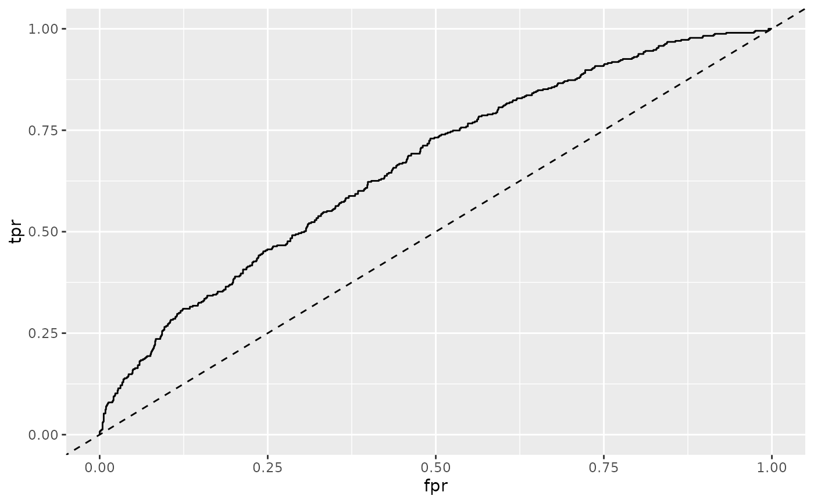
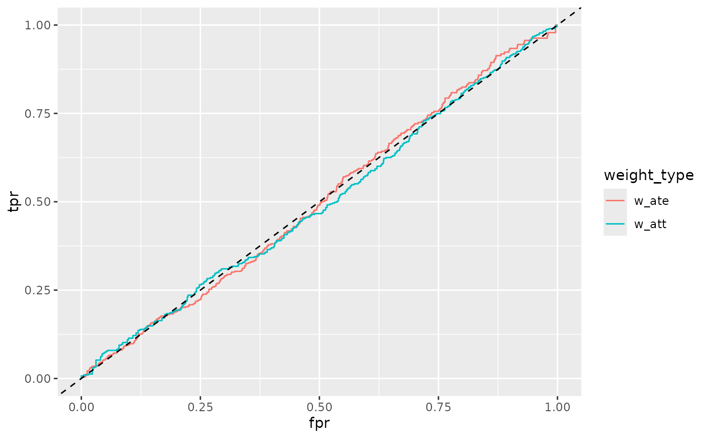

A ggplot2 geom for plotting ROC curves with optional weighting. Emphasizes the balance interpretation where AUC around 0.5 indicates good balance.
Usage
geom_roc(
mapping = NULL,
data = NULL,
stat = "roc",
position = "identity",
na.rm = TRUE,
show.legend = NA,
inherit.aes = TRUE,
linewidth = 0.5,
treatment_level = NULL,
...
)Arguments
- mapping
Set of aesthetic mappings. Must include
estimate(propensity scores/predictions) andtruth(treatment/outcome variable). If specified, inherits from the plot.- data
Data frame to use. If not specified, inherits from the plot.
- stat
Statistical transformation to use. Default is "roc".
- position
Position adjustment. Default is "identity".
- na.rm
If
FALSE, the default, missing values are removed with a warning. IfTRUE, missing values are silently removed.- show.legend
Logical. Should this layer be included in the legends?
NA, the default, includes if any aesthetics are mapped.- inherit.aes
If
FALSE, overrides the default aesthetics, rather than combining with them.- linewidth
Width of the ROC curve line. Default is 0.5.
- treatment_level
The level of the outcome variable to consider as the treatment/event. If
NULL(default), uses the last level for factors or the maximum value for numeric variables.- ...
Other arguments passed on to layer().
See also
check_auc() for computing AUC values, stat_roc() for the underlying stat
Other ggplot2 functions:
geom_calibration(),
geom_ecdf(),
geom_mirror_histogram(),
geom_qq2()
Examples
# Basic usage
library(ggplot2)
ggplot(nhefs_weights, aes(estimate = .fitted, truth = qsmk)) +
geom_roc() +
geom_abline(intercept = 0, slope = 1, linetype = "dashed")

# With grouping by weight
long_data <- tidyr::pivot_longer(
nhefs_weights,
cols = c(w_ate, w_att),
names_to = "weight_type",
values_to = "weight"
)
ggplot(long_data, aes(estimate = .fitted, truth = qsmk, weight = weight)) +
geom_roc(aes(color = weight_type)) +
geom_abline(intercept = 0, slope = 1, linetype = "dashed")
